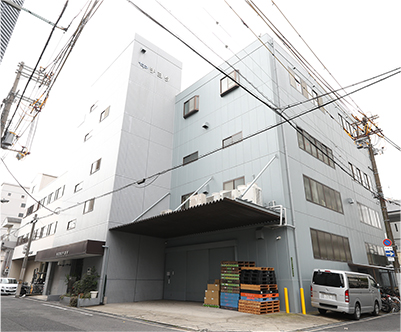

このたびは、株式会社チヨダのホームページをご覧いただき、ありがとうございます。
当社は、昭和39年の創業以来、プラスチック製品の成形・販売に携わってまいりました。その中で、当社が常に大切にしてきたのが「お客様の安心感を第一に考える」という想いです。
当社が製造する製品は、電柱に取り付けられる絶縁カバーや電気配管用部品（継手）など、日々の生活に密接に関連するものばかりです。だからこそ、「チヨダに任せれば絶対に大丈夫！」と思っていただける安心感が大切なのだと考えております。
ISO9001やJIS認証を取得している点からもお分かりいただけるように、当社では製品の品質管理を徹底しております。チェック体制もしっかりと確立し、製造過程においても抜き取り検査を行うなど、高品質の製品を安定的に供給するための手間を惜しみません。当社が高品質の製品を供給することで、ひいては社会全体の安心感へとつながると信じているからです。
これからもお客様の安心感を第一に、品質管理をさらに徹底し、お客様にとっての最高品質に近づけるように、成形技術の研鑽に努めてまいります。
- 
| 会社名 | 株式会社 チヨダ |
|---|---|
| 所在地 | 大阪府大阪市生野区巽南3丁目19-12 |
| TEL | 06-6758-1171 |
| FAX | 06-6752-6651 |
| 創業 | 1964年9月(昭和39年9月) |
| 会社設立 | 1972年11月 |
| 商標 | |
| 目的 | プラスチック製品成形ならびに販売 |
| 資本金 | 1,000万円 |
| 決算期 | 年1回4月30日 |
| 役員 | 代表取締役 門阪 好哲 取締役 門阪 昌勝 |
| 工場所在地 | 本社工場 大阪府大阪市生野区巽南3丁目19-12 |
| 従業員数 | 男子17名、女子8名、計25名 (1級プラスチック成形技能士3 名、 2級プラスチック成形技能士2名) |
| 主たる製品 | 電気配線用保護カバー類等、電機配管用部品等、 水道配管用部品等 |
| 取引銀行 | 三菱東京UFJ銀行今里支店 |
| 昭和39年（'64）9月 | ［千代田化成工業所］として独立開業する。（大阪市中央区鰻谷1丁目） |
|---|---|
| 昭和45年（'70）9月 | 富田林市内に工場開設、硬質塩ビの成形を開始する（成形機 150t 4台）。 |
| 昭和47年（'72）11月 | 株式会社チヨダに法人として発足する。大阪市中央区長堀橋筋1丁目へ本社を移転する。 |
| 昭和48年（'73）9月 | 業務拡大（電力向け絶縁カバー）に伴い工場開設。（大阪市平野区加美北：成型機 330t 2台設置） |
| 昭和53年（'78）3月 | 受注拡大、合理化を目的に富田林工場を平野工場に移転、統合する。 |
| 昭和55年（'80）12月 | 日本工業規格表示許可工場、取得する（大阪工場/2号コネクタ） 。 |
| 昭和57年（'82）6月 | 本社を平野工場に移転する。 |
| 平成6年（'94）4月 | 大阪市生野区巽南3丁目へ本社を移転する。 |
| 平成8年（'96）8月 | 資本金を1,000万円に増資する。 |
| 平成11年（'99）7月 | 本社工場内にクリーンルームを新設する。 |
| 平成15年（'03）3月 | 合理化を目的に大阪工場を本社工場に移転、統合する。 |
| 平成15年（'03）6月 | 日本工業規格表示許可工場、取得する（移転の本社工場）。 |
| 平成15年（'03）10月 | S・マーク製品認証工場、登録なる（電気用品安全法）。 |
| 平成17年（'05）5月 | 2代目・代表取締役社長に門阪好哲氏 就任 |
| 平成20年（'08）1月 | ISO9001（品質）の認証登録なる。 |
| 平成20年（'08）2月 | 新JIS認証取得（JIS C 8432、8435）（JIS制度改正） |